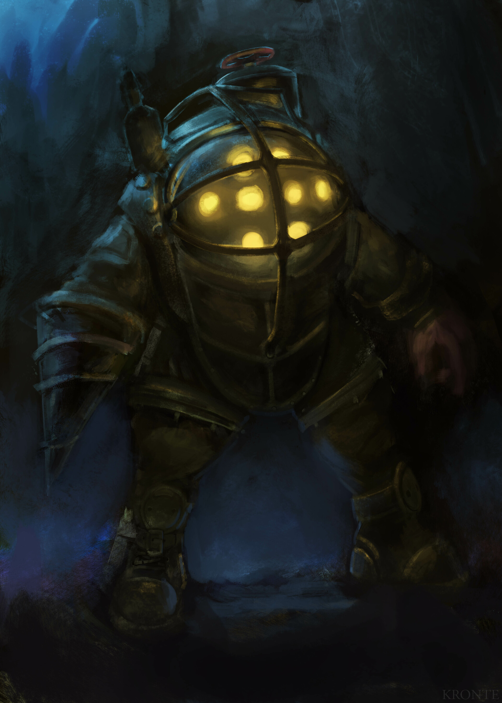
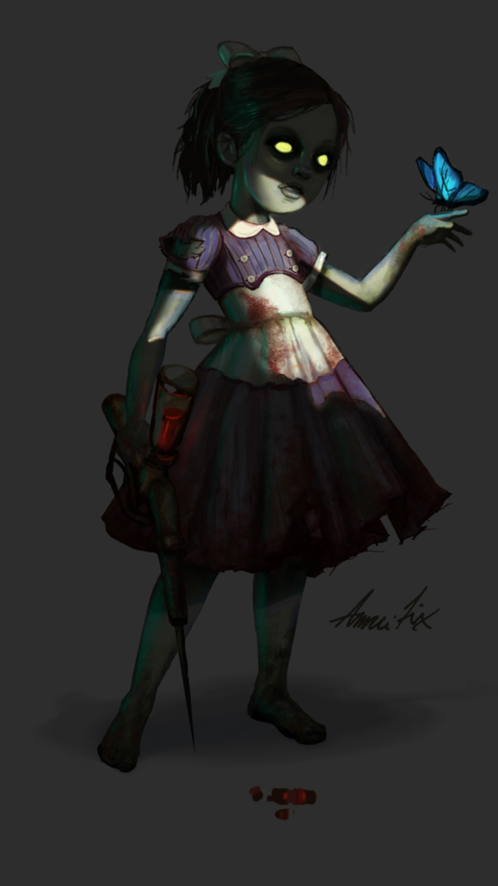
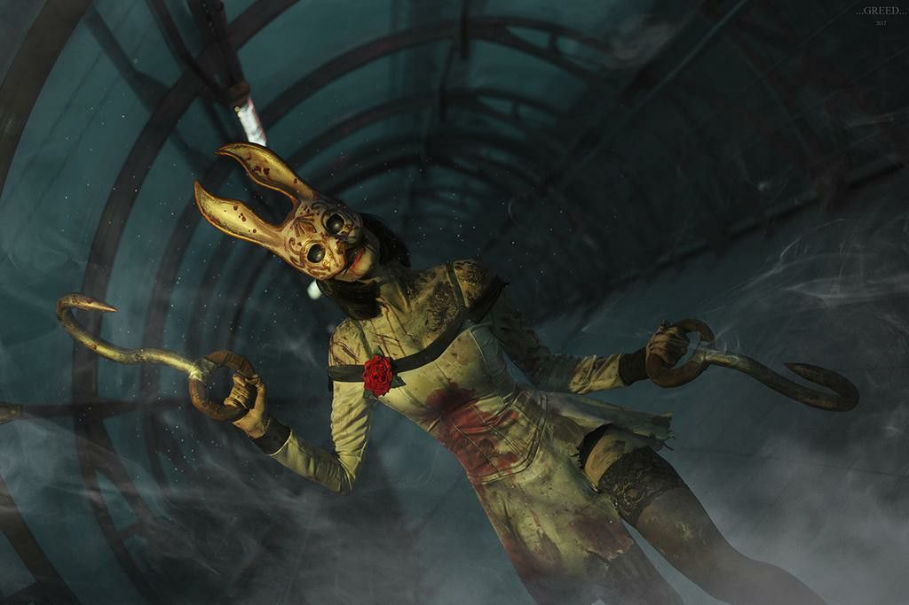

Just a taste of what awaits below
If you want to survive your dystopian Atlantic adventure you'll have to think and act quickly. There are substantially more threats than friends, however don't let that detour you! Those friends are helping from the shadows, the science that crippled the city can be harnessed for yourself, and even the environment seems to have your best interests in mind...sometimes.
Mr.Bubbles
More accurately known as a Big Daddy, these super humans in advanced diver suits will stop at nothing to protect their little sister. While they won't attack on sight, they do stand in your way as you strive to grow powerful enough to escape.
The Little Sisters
Innocence stolen by society, they cling to their protector hunted by Raptures inhabitants. Will you help them escape, are you strong enough to save them, or can they be saved at all?
Splicers
The majority of Rapture's ADAM crazed inhabitants, lurking around every corner, driven mad with genetic alterations, and hungry for more. There are many varieties of splicer, and you'll need every advantage possible to navigate their crumbling home.
- Will you venture into Rapture?
- If you do, will you survive?
- I'm sure you will!
- The real question is, who will you be when the dust settles?